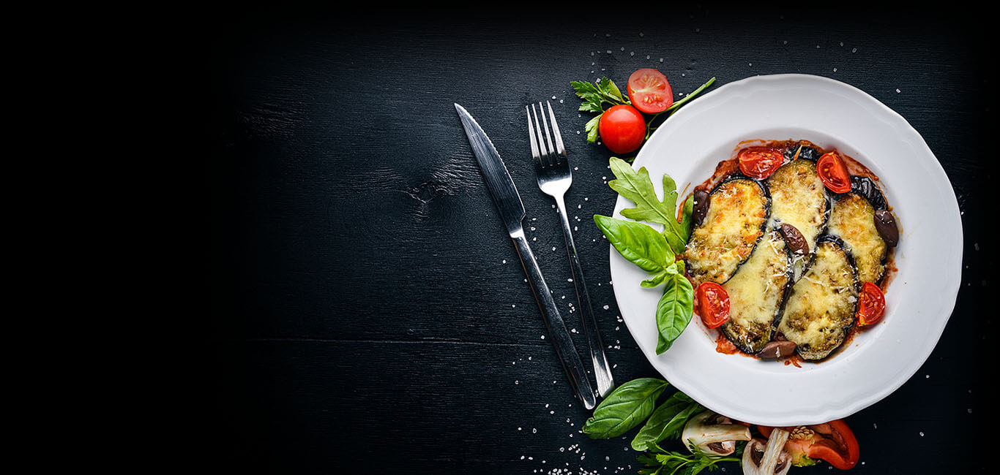

Мої інтереси
Гра на гітарі

Музика ввійшла у моє життя ще у 2009 році,коли я прийшов у перший клас.
Батьки вирішили віддати мене в школу з музичним нахилом.
Зі всіх інструментів меня найбільше сподобалась гітара.
Впродовж 8 років я проходив навчання.
За цей термін я полюбив музику і вирішив розвиватись у цьому напрямку.
Зараз я не уявляю свого життя без неї.
Книга
Однією із моїх улюблених книг є "Ваш надійний тил" від автора Кейт Феррацці.
Ця книга - своєрідне продовження попереднього бестселера Кейта Феррацці "Ніколи не їжте наодинці". .
Але якщо у попередній автор більше розповідає про те, як налагоджувати зв'язки із практичної сторони та що це вам дасть, то у цій розбирає детальніше, як будувати стосунки з людьми та створювати свій "надійний тил"
Ферраці закликає читачів загадати себе у дитинстві та бороти бар'єри, які ми ставимо у спілкуванні із іншими людьми.
Він застерігає від того, щоб грати роль "ідеальних" людей: не важливо чи директор відомої компанії, чи простий робочий - усім треба відчувати надійний тил і не боятись звернутись до когось за допомогою.
Впевнені і успішні люди - це ті, хто довіряє не тільки власній думці, а й чужій, і просто довіряє.
Кулінарія

Не скажу, що я майстер в цій справі,але з гордістю скажу,що мені це подобається.
Впродовж 2-3 років я понурився в тему кулінарії та намагаюсь розвивати себе у цій сфері.
Чому саме кулінарія?
Відповідь проста)
Я надзвичайно сильно люблю смачно поїсти.
Головна
Контакти